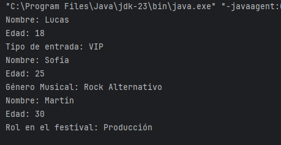

Diferencia entre crear un objeto de una subclase directamente vs. usarlo como una referencia de la superclase
En el ejemplo del Festival de música, en el main() usamos:
Asistente a1 = new Asistente("Carlos", 25, "VIP");Pero también podríamos haber hecho esto:
Persona a1 = new Asistente("Carlos", 25, "VIP");¿Cuál es la diferencia?
1. Usar una referencia de la superclase (Persona a1 = new Asistente(...))
- Se usa polimorfismo, lo que significa que a1 se comporta como una Persona.
- Sólo podemos acceder a los métodos y atributos declarados en Persona, incluso si el objeto es un Asistente.
- Si un método está sobrescrito (@Override), sí que se usará la versión de la subclase. Aunque no escribiéramos la anotación @Override también sería así, ya que si sobrescribimos un método en una subclase, Java lo reconoce aunque no usemos @Override, siempre que el método siga la misma estructura (nombre, parámetros y tipo de retorno).
Persona a1 = new Asistente("Carlos", 25, "VIP");
p1.mostrarInfo(); //llamará al método de Asistente, NO al de Persona
Pero si intentamos acceder a p1.entrada (un atributo de Asistente), nos dará error:
System.out.println(p1.entrada); //ERROR: no se puede acceder desde una referencia Persona
Esto es útil cuando queremos manejar objetos de distintas subclases de forma genérica, por ejemplo, en un array de Persona:
Persona[] personas = {
new Asistente("Lucas", 18, "VIP"),
new Artista("Sofía", 25, "Rock Alternativo"),
new Organizador("Martín", 30, "Producción")
};
for (Persona p : personas) {
p.mostrarInfo(); //se ejecuta la versión sobrescrita de cada subclase
}

2. Usar una referencia de la subclase (Asistente a1 = new Asistente(...))
Asistente p1 = new Asistente("Lucas", 18, "VIP");
p1.mostrarInfo(); //llama al método de Asistente
System.out.println(p1.entrada); //FUNCIONA: puede acceder a su propio atributo
- En este caso, a1 es específicamente un Asistente, por lo que podemos acceder a todos sus atributos y métodos.
- No hay polimorfismo aquí, porque a1 siempre se tratará como Asistente.
- Esto es útil cuando necesitamos acceder a funcionalidades específicas de la subclase.
¿Cuándo usar cada uno?
| Caso | ¿Cuál usar? |
| Manejar diferentes tipos de objetos en un solo array/lista |
Persona p = new Asistente(...) (polimorfismo) |
| Sólo queremos tratar un objeto como su propia clase sin restricciones | Asistente p = new Asistente(...) |
| Queremos asegurarnos de que usamos la versión correcta de un método sobrescrito | Cualquiera, ya que @Override funcionará igual |
| Necesitamos acceder a métodos o atributos específicos de la subclase |
Asistente p = new Asistente(...) (porque con Persona no podríamos) |